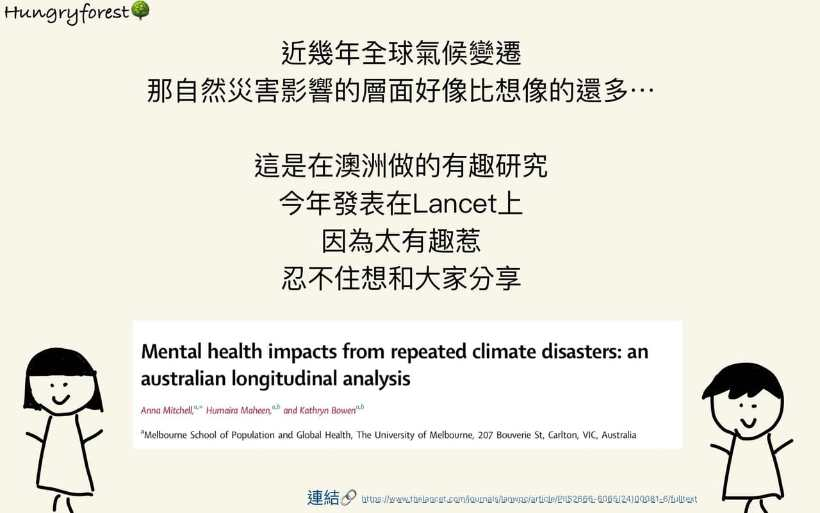
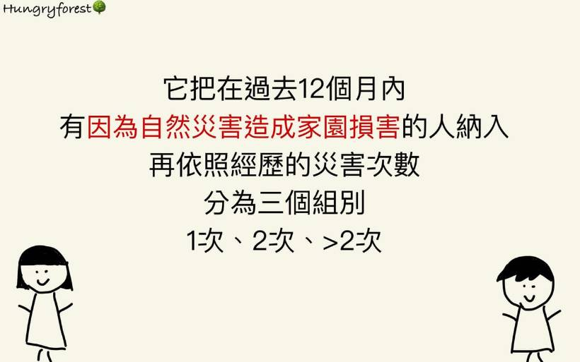
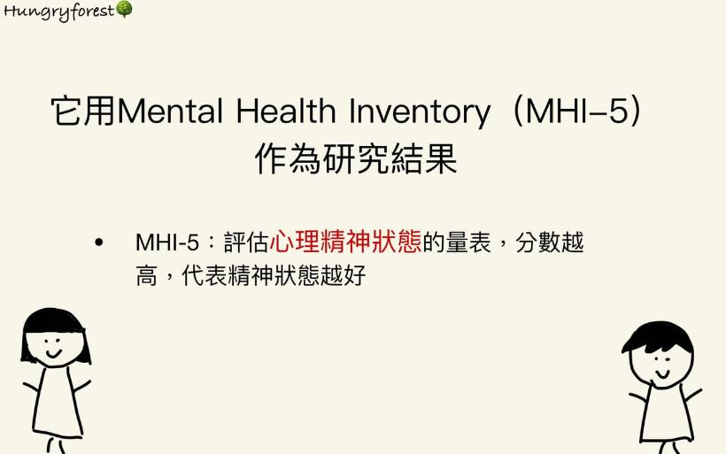
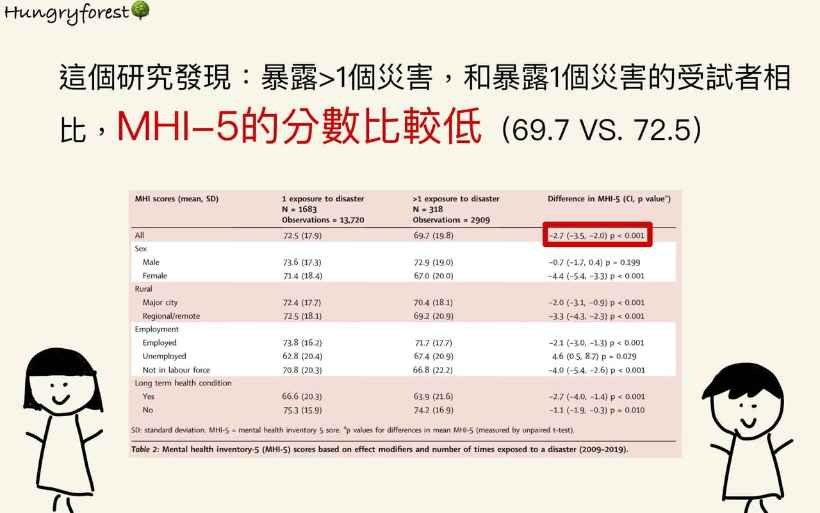
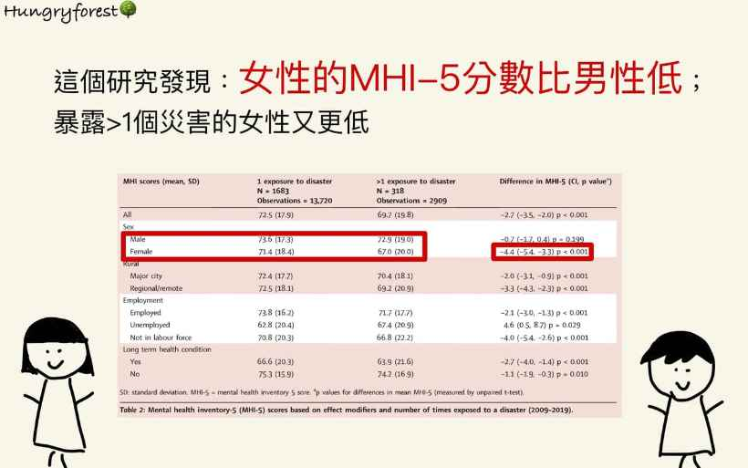
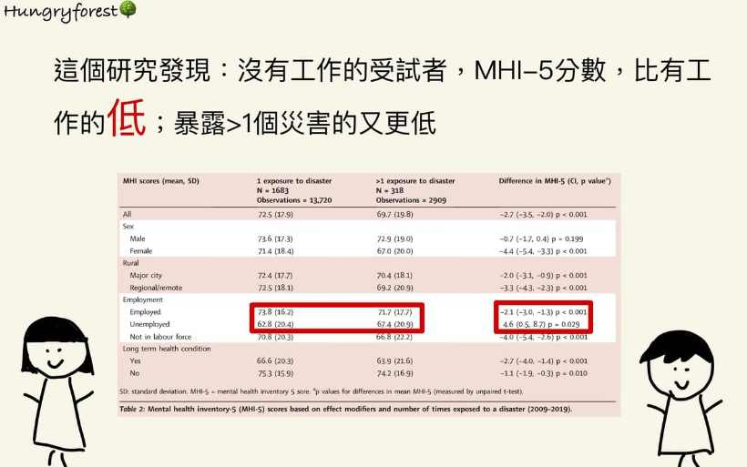
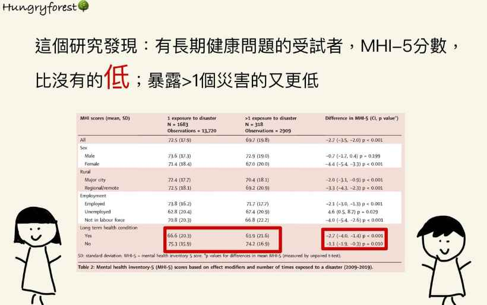
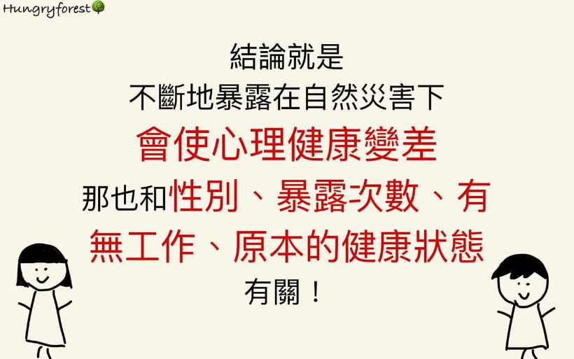
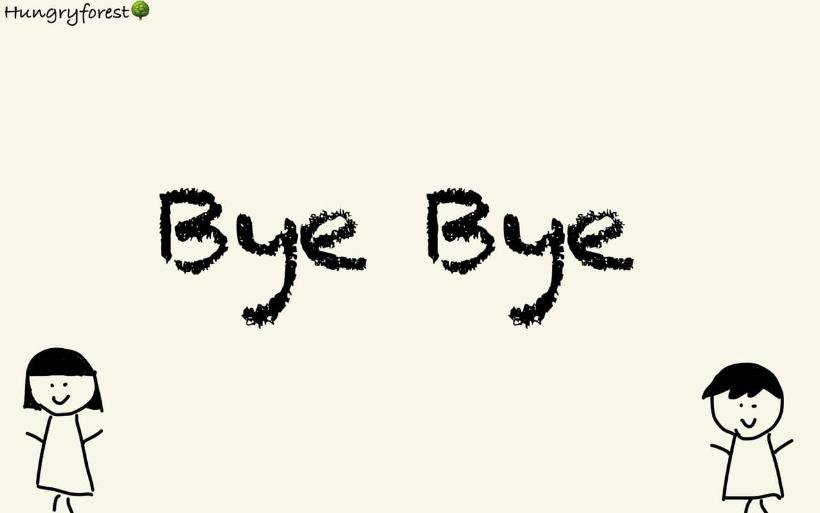

全球氣候變遷，造成自然災害越來越多，它除了奪走性命，還可能會影響到身心健康😰
文章連結🔗:
https://www.thelancet.com/journals/lanwpc/article/PIIS2666-6065(24)00081-6/fulltext
這是在澳洲做的研究，它發現自然災害會讓人的身心狀態變差；遇到越多次災害，影響的程度也越高；那也和本身的性別、有沒有工作、原本的健康狀態有關哦🫡

兩人共筆王翰霖 醫師、張瑜珊 醫師
認識小編